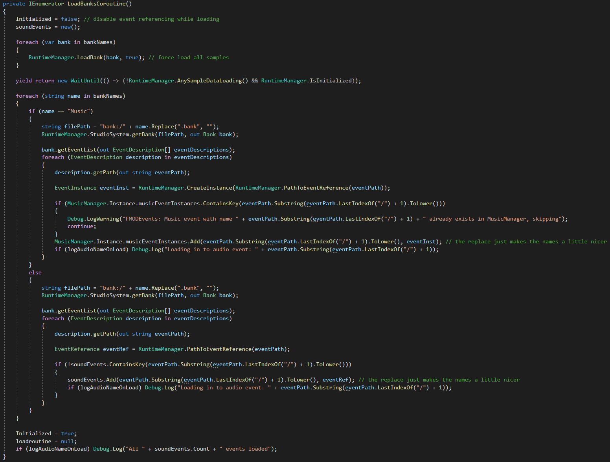
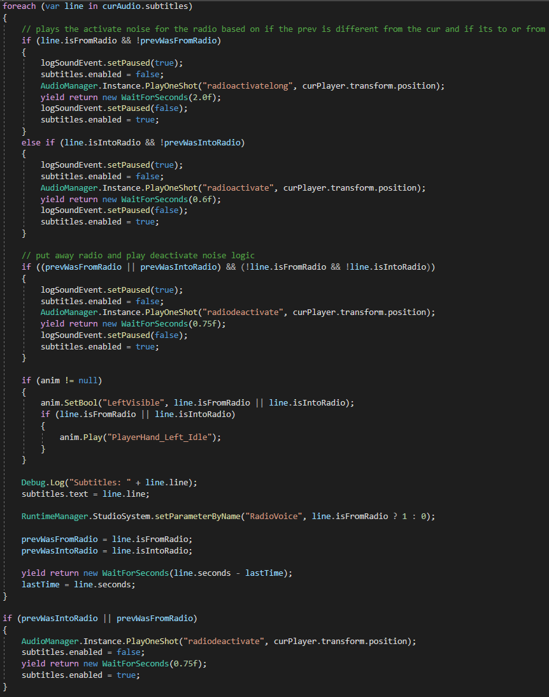

Project: Deimos
FMOD • Unity • C# • Systems Programming
FMOD Bank Loading

• The first major challenge of this project was loading in FMOD banks during runtime and storing them in a way that could be accessed easily later on.
• To store the banks properly me and my team used a Hash Table of string names and corrosponding EventReferences.
• The for loop then loads every event associated with every bank that we had in the project and if the event was apart of the Music bank it got stored in a special MusicEventReferences Hash Table which did stuff in our music manager.
Audio Log / Subtitle System

• Another feature that needed added and system that needed designing was subtitling for the in game dialog.
• Our way of doing this is by using a ScriptableObject that stored a list of a custom struct that held all the info for each subtitle line (the length, the text that needed to be displayed and if it was being spoken into a radio) and then reading and displaying it.
• This system of reading the ScriptableObjects and displaying the subtitles is shown above.
In Game Audio Demo Link
COLORSNATCHER
Unity • C# • Gameplay Programming